Grace
CO. GALWAY
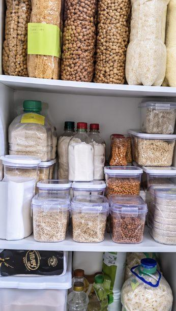
Fifty-eight, living on my own, and I always thought this was for younger families. I did one shelf a week like the book says. Now the whole press is labelled and dated. I sleep better, honestly.
In September the Government posted a booklet to 2.2 million Irish homes telling them to be ready. It left out the number. We did the sums.
Build my family’s emergency supply plan → Seven questions · 60 seconds · freeThe UN’s weather agency has confirmed the strongest El Niño ever measured, +2.47°C and still climbing. In January 2025 one storm left 768,000 Irish homes without power and 84,000 without water, some for twenty days. The next one is a question of when, not if.
Seven questions. If you can answer every one of them, close this page.
Seven out of seven and you already have a plan. You do not need this page. Hesitate on even one and that is the gap, and it is the gap that costs you on the third day.
Everything scales from this, so it is the first question.
This is the question that changes the answer most, and most people have to go and check.
Some heating keeps working without electricity. Most does not.
Right now, not what you would buy. Count what is actually in the press.
Working means you know where it is and the batteries are good.
Medication that has to stay cold, a nebuliser, a stairlift, an oxygen concentrator.
Last question.
Older people are most at risk of cold and of losing heat and medication in a long power cut.
Most plans forget them, and some human foods are dangerous to dogs and cats.
Keeping a small child warm and fed changes the first hour completely.
Your plan
| 3 days | 21 L |
| 7 days | 49 L |
| 14 days | 98 L |

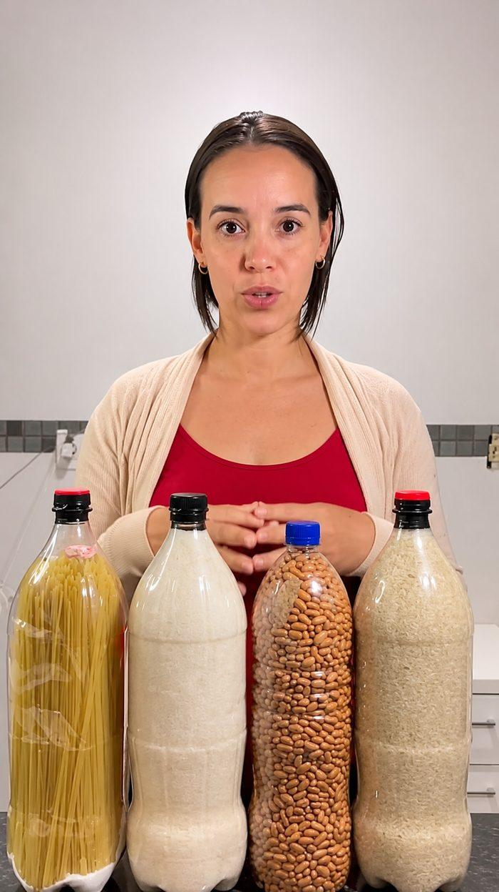
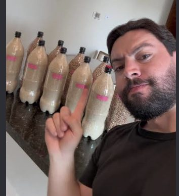
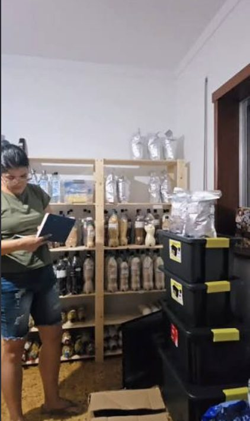
Card · Apple Pay · Google Pay · delivered to your inbox in minutes
Your free one page checklist, as promised. One A4 sheet for the press door, nothing to buy.
Download the PDF ↓Not our claims. Theirs.
These are the pages themselves, as they ran. The source and the date are printed under each one.
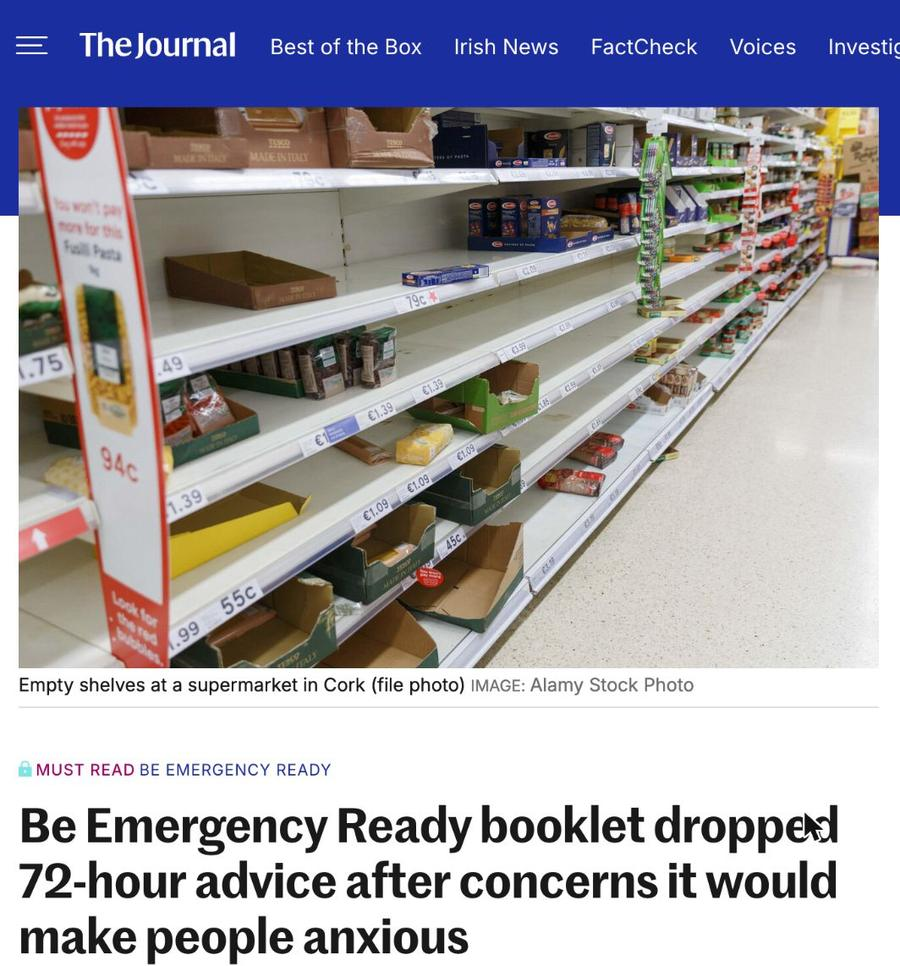
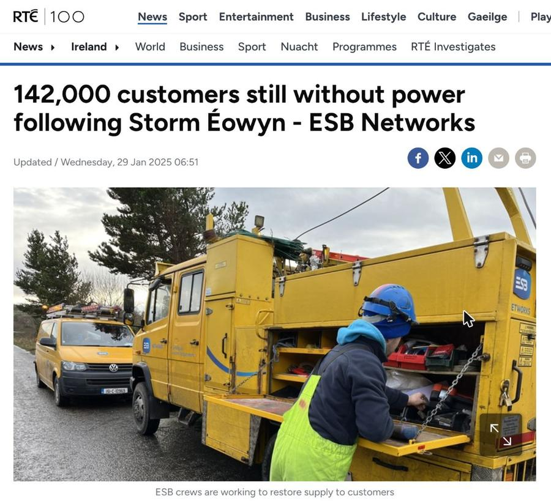
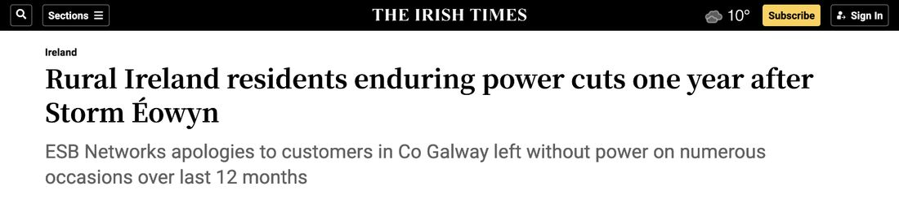
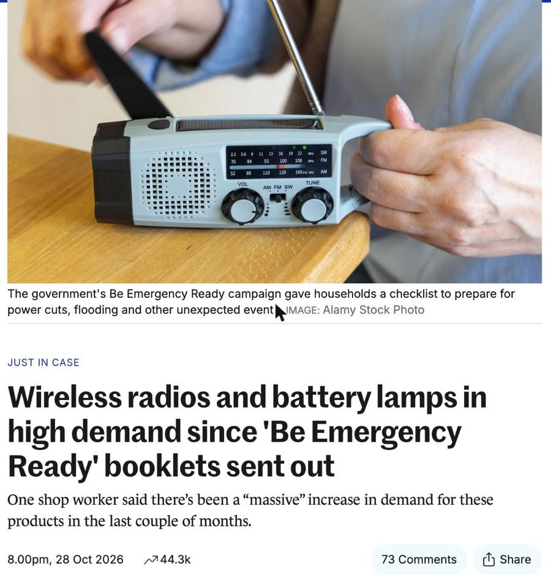
What it did to people
Numbers are easy to skim. These are the ones the Irish Times went back and found a year later, because a year later it still was not over for them.
Fifteen days without electricity, in January, with a six year old daughter in the house. Not fifteen hours. Fifteen days.
The mother woke at three in the morning when the baby monitor stopped working. Eight days with no power, and a son at home who depended on the few things that needed it. In her words to the paper, “everything we depended on from day to day just wasn’t available anymore.”
Trapped for three days with no mobile signal. No way to tell anyone she was fine, and no way to find out whether anyone else was.
Lost the roof off the house. A year later it was still being rebuilt.
Source: The Irish Times, 24 January 2026, “Storm Éowyn one year on”. Read it ↗
That second one is the reason there is a chapter in this book about the vulnerable customer register, and the reason the quiz above asks whether anyone in your house depends on mains power. It is one free phone call. Most people have never heard of it.
What is building now
The World Meteorological Organization declared the event on 2 June 2026. Its Secretary-General, Celeste Saulo, said the strength now being projected has never appeared in the agency’s records.
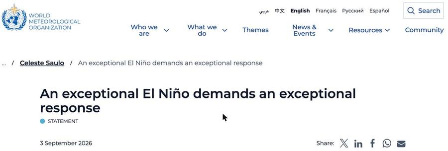
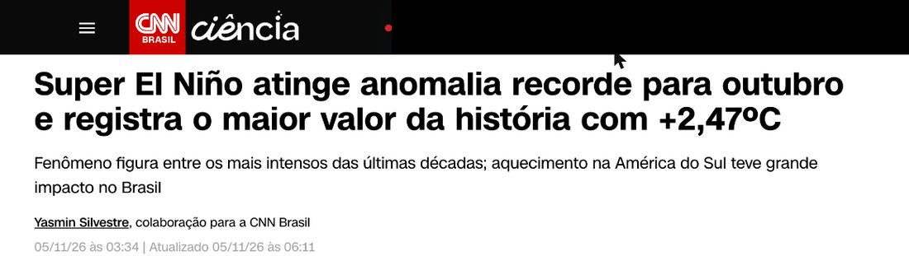
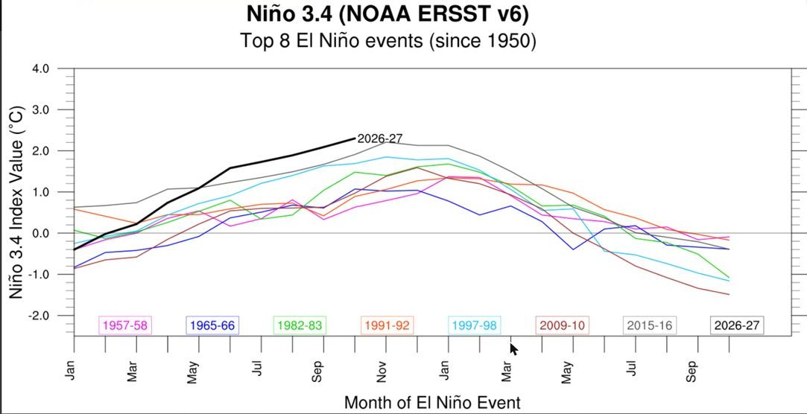
When did this last happen? It did not. The black line is this year. Every coloured line beneath it is a past El Niño, including 2015-16 and the 1997-98 event that flooded California and dried out Australia. This one is already above all of them, and earlier in the season than anything on record going back to 1950.
Fig. 1 · Sources: NOAA Climate Prediction Center ENSO monitoring; WMO El Niño update, August 2026.
| Event | Early September anomaly | Note |
|---|---|---|
| 1997 to 1998 | 1.9°C | Previously regarded as a benchmark very strong event |
| 2015 to 2016 | 1.9°C | Held the peak record, set 18 November 2015 |
| 2026 to 2027 | 2.84°C | September monthly value. Weekly reading hit 3.4°C by 28 October |
| WMO projection | up to 3.8°C | November 2026 to January 2027. Previous strongest reached about 3.0°C |
What this means. The warm pool in the Pacific is already hotter than it was during the 1997-98 and 2015-16 events, both of which brought deadly flooding, drought and crop failure around the world. A stronger El Niño loads the dice for a wilder Atlantic storm season, which is the one that reaches Ireland.
Fig. 2 · Sources: ESB Networks press releases, 24 January and 2 February 2025; RTÉ News, 28 January 2025.
| Point | Customers without power |
|---|---|
| Day 0, 24 January 2025 | 768,000 |
| Day 4, 28 January | 142,000 |
| Around day 13 | 18,000 rural homes |
| Day 18, 11 February | 0 |
What this means. Help came fast for most, and slowly for the few. If you are one of the 18,000 at the flat end of that line, “the State will help” means waiting the better part of three weeks. The plan is for that tail, not the first forty-eight hours.
Look at the shape of that. Most of the country was back inside four days, which is why most of the country moved on. The eighteen thousand houses at the flat end of the line are barely visible on the graph, and they are the ones this book is written for.
Fig. 3 · Source: Environmental Protection Agency and Met Éireann regional climate projections for Ireland.
| Projection | Change | Horizon |
|---|---|---|
| Frequency of intense North Atlantic cyclones near Ireland | +15% | vs current climate |
| Winter rainfall | +10% | by 2050 |
| Summer rainfall | −12 to −17% | by 2050 |
| Extreme precipitation events above 20mm a day | more frequent | north west especially |
| Storm frequency affecting Ireland | lower | but higher intensity, higher damage risk |
What this means. Fewer storms, but harder ones, landing on wetter winters. More of the rain arrives in short, violent bursts that overwhelm drains and rivers, and the long dry spells in summer strain the same water supply you depend on. Both ends of that swing hit the home.
Fig. 4 · Source: EPA Climate Ireland, future climate projections, sea-level rise and coastal flooding.
| Projection for Ireland | Value |
|---|---|
| Return period of today’s 1-in-100-year coastal flood, by 2100 | every 1 to 2 years |
| Sea-level rise by 2100, early action scenario | 0.32 to 0.6 m |
| Sea-level rise by 2100, late action scenario | 0.63 to 1.01 m |
| Named storms to reach Ireland, 2023-24 season | 11 (13 to 14 severe) |
What this means for your house. A flood that your grandparents might have seen once is on course to arrive most winters. Add the stronger storms and the power cuts that come with them, and “a bad year” stops being rare. This is the scenario the Government booklet was written for, and the one it would not put a number on.
How long this goes on
| Horizon | What is expected |
|---|---|
| Now to Feb 2027 | The WMO puts the likelihood of El Niño persisting at nearly 100 per cent, peaking in November or December and running into early 2027 |
| This winter | Projected tropical Pacific anomaly of up to 3.8°C, against about 3.0°C for the strongest previously recorded |
| Nov to Feb, every year | Ireland’s Atlantic storm season. Met Éireann names them as they come |
| Through 2027 | ESB Networks still has 3,000 poles to replace and 900km of cable to lay from a storm two winters ago |
| To 2050 | EPA and Met Éireann project +15% intense cyclones, +10% winter rainfall, and storms that are fewer but worse |
Why this week and not in January
In a long power cut you are not the one at risk. You will be cold, bored and annoyed. The risk sits with whoever else is under your roof.
So the time to do this is a week when nothing is happening. Which is this week. The booklets went out in September, the shops have been clearing out of radios and lamps since, and the season runs to February.
05b / What happens to the ones who wait
This is not a warning about the future. It is what the papers reported the last time, about real households in Mayo, Leitrim, Clare and Galway.
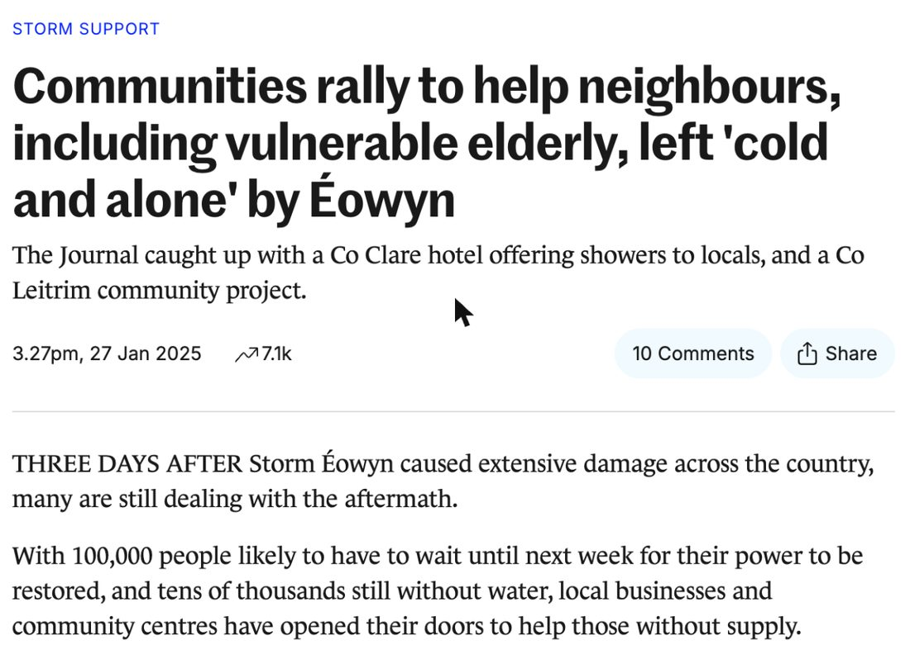
You do not get to prepare once the storm is named. The shops clear out, the car parks fill, and the thing you needed is the thing everyone else is reaching for. The only preparation that works is the boring kind, done on an ordinary week, before anyone is talking about it.
Build my family’s emergency supply plan →The part nobody plans for
Most people prepare for the dark. They buy a torch, they find the candles, they get on with it. Then on the second morning they go to fill the kettle and nothing comes out of the tap.
In January 2025, 84,000 people were without water and another 300,000 were at risk of losing it, because the water system runs on the grid and has no backup. If your water comes from a private well or a group scheme it arrives through an electric pump. No electricity, no pump. No tap, no shower and no flush, starting the moment the pressure vessel empties.
Fig. 4 · The hour that decides the week. Fill everything before the pressure goes.
Here is the number that makes people put down the phone and go and look. A typical 24 litre pressure vessel holds about seven litres of usable water once the pump stops. An older toilet cistern uses nine. Your entire reserve does not cover one flush.
The book also shows you the two reserves already in your house that most people never think of: the attic tank at about 227 litres and the hot water cylinder at about 120. Both are flagged clearly as not for drinking, on HSE and EPA guidance.
Why the booklet in your drawer has no numbers in it
This is on the public record, and it is the reason this book exists at all.
An advertising presentation in July 2025 set the campaign objective as helping people manage their basic needs “for at least 72 hours without external assistance”, in line with the European Commission’s preparedness strategy.
Then the research came back. Focus groups run by Ipsos B&A in August 2025 found the 72 hour figure made people anxious rather than organised. Participants asked “What has happened that I do not know about?” and “What is being hidden from me?”
In October 2025 a Department of Defence briefing recorded that they were “moving away from the 72 hours self-sufficiency concept” and would emphasise State support instead. The booklet that reached 2.2 million homes in September 2026 asks for “an adequate supply” and leaves the number out.
So that is what this is. The same advice the State posted through your letterbox, with the arithmetic put back in.
The solution, and what each part does
Not thirteen chapters of advice. Thirteen chapters of decisions already made, so you are not standing in an aisle in Woodie’s working out which lamp.
A timed six step triage. What to unplug so nothing blows when the power returns, how to tell in sixty seconds whether it is your house or the road, the ESB Networks fault line with your MPRN and Eircode ready, and taking a screenshot of PowerCheck before the mast batteries fade.
What you get: your own written sequence, pinned at the fuse board.
The booklet says two to three litres a person a day for drinking. This adds the cooking, the teeth, the pets and the toilet nobody counts, then tables it for one to six people across three, seven and fourteen days.
The number: 7 litres potable plus 15 non-potable, per person, per day.
Mains, private well or group scheme, and what each does when the electricity stops. A five minute test that makes you measure your own reserve. The first hour, in order. The two hidden reserves in your house. The toilet, honestly, including the bucket method and the hygiene that goes with it.
The number: about 7 litres in a 24 litre pressure vessel. A flush uses 9.
Boiling, certified tablets and certified filters, in that order of reliability, with the hard limit of each. Why boiling does nothing about nitrates or slurry run-off, which matters if you are anywhere near farmland. What a boil water notice actually requires of you.
Routed to the HSE, and the EPA for a private well.
A complete food plan that needs no hob, no fridge and no electricity, with the day by day menu, the calorie maths shown, and the shopping list priced at own brand and at branded. Plus the tin opener argument, which is that a third of the week’s calories sit behind one €4 tool.
The number: 16,339 kcal against a 14,000 requirement. €55.54 own brand.
Shelf space arithmetic, what genuinely keeps and for how long, the FSAI use-by versus best-before distinction, the four signs to bin it, and why the hot press is the worst place in the house to store food, explained through shelf life halving for every 10 degrees of warmth.
The number: 0.09 m³ per adult-month. A family of four fits under one bed.
How long a full freezer holds against a half empty one, the coin on the ice test read three different ways, the order to cook things in, and the bin list. Anchored to safefood and the FSAI, including the rule that you never smell something to decide.
The numbers: 48 hours full freezer, 24 half, 4 fridge.
Light in order of sensibility, head torch first and candles last on fire service advice, with quantities per household and the full battery count. Then the power bank maths done honestly, the duty phone rotation, the reserve phone that stays off, and charging from the car inside the socket limit.
The number: a 20,000mAh bank gives three full charges, not the five on the box.
The flagship module. Watts versus watt-hours, a seventeen row load table for your actual appliances, then three costed builds at €250, €600 and €1,600 to €2,400, each paired with its no-assembly power station equivalent. What it will run and what it never will, with the kettle and the electric shower named as impossibilities.
The numbers: 430Wh a day for essentials. A 100Ah AGM gives 520Wh at the socket, LiFePO4 910Wh.
And the rule that keeps linesmen alive: never connect anything to your house wiring without a transfer switch fitted by a Registered Electrical Contractor. Backfeed turns your 230 volts into 20,000 on the line an ESB crew believes is dead. A changeover switch is €350 to €700 and it comes with a certificate.
The one room strategy, layering, hot water bottles, and how to get a fortnight of heat and hot water out of a stove if you have one. Then the rule with no exceptions, stated three separate times because six people a year die of it in Ireland.
Nothing that burns fuel runs indoors, in an attached garage, or in a porch. Alarm to EN 50291.
Why mobile networks go quiet after a few hours, the radio frequencies to write on a card and tape inside a press door, Met Éireann’s three warning levels as three different sets of actions, and the contact card with Eircode and MPRN for when a flat phone takes your address book with it. Plus the out of area relay.
The Irish specific that saves you money: RTÉ switched off DAB on 31 March 2021, so a DAB-only radio is useless here.
Lawful, defensive home security that matters more when the street is dark and the alarm has no mains. Why the frame fails before the lock, so the best value job in the book is a €4 box of 100mm screws. Battery and solar lighting with an honest caveat about seven and a half hours of December daylight. The oil tank, because heating oil theft is a real rural problem. Based on An Garda Síochána crime prevention advice.
Also what your alarm really does: a 12V 7Ah panel battery gives 4 to 8 hours, and a wifi camera is useless without the router.
What actually produces calories here: potatoes first and why, then kale, carrots, onions, leeks and broad beans, with the month by month sowing calendar for Ireland. What works on a windowsill with no garden, down to sprouting seed in a jar, which is the fastest real food you can grow indoors. Rainwater collection, and what it is and is not safe for.
Written honestly as a project measured in seasons, not a fix for next week. That honesty is what makes the rest credible.
Two things worth saying straight
You could. It needs electricity and a signal. On day twelve you will have neither, and the sheet taped inside your press door will still be there.
There is a second problem. A chatbot answers the question you ask it. It does not know that your pump is electric, that ESB Networks still has 3,000 poles outstanding, what the Be Emergency Ready booklet says or what it deliberately left out, what a battery lamp costs in Woodie’s, or what an Irish December does to a solar panel. Most people never think to ask what happens to their water, which is exactly why that module exists.
And on the parts that can hurt you, a confident wrong answer is the dangerous kind. Carbon monoxide, generator backfeed, water treatment, what is safe to eat after the freezer thawed. Every one of those statements in this book is tied to a named body on the page. Check any of them.
Neither are we, and there is nothing in here about the end of the world.
The Government posted this advice to 2.2 million homes in September. The European Commission published its own on 3 November. Norway raised its household recommendation from three days to a full week and wrote to the whole country. Sweden sent a 32 page booklet to 5.2 million households. This is the mainstream position now, and it is about nine litres of water in a press rather than a bunker in the garden.
10 / The rest of the questions
That is a better starting point than most. So: how many litres, for how many people, for how many days? That is the question the booklet does not answer, and it is the entire reason this exists. If you can answer it off the top of your head, you genuinely do not need the book.
They did help, and they will. It still took eighteen days to get the last house back on, and 75,000 homes waited more than a week. The State turns up. It just does not turn up first, and this book is about the gap in between.
A generator cannot be safely or lawfully connected to your house wiring without a transfer switch fitted by a Registered Electrical Contractor, because backfeed can kill an ESB Networks linesman working on your line. A changeover switch costs €350 to €700 and comes with a certificate. Most generators bought in a panic end up in a shed, unserviced. Module nine covers all of it and recommends a 12V battery and inverter setup instead, which is safer, quieter, can be used indoors and costs less.
Every figure carries its source on the page: ESB Networks, the HSE, the EPA, Uisce Éireann, the FSAI, safefood, Met Éireann, Safe Electric, An Garda Síochána, and the Government’s own booklet. You do not have to take our word for anything. Look any of them up.
Most of it, yes. On a mains supply your pressure holds for a while, though pumping stations have their own limits and 84,000 people lost water in 2025 anyway. Your bigger problems are the fridge, the heating, the router, and the fact that card machines and ATMs go down with the power. The well module is marked clearly so you can skip it.
The seven day shelf fits in a hall press, and the book does the space arithmetic so you know before you buy. A family of four’s month of food fits under one double bed. It also tells you where not to store food, which is most of the warm places people choose first.
The first list is €81.15 and it genuinely changes the outcome of a three day power cut. There is also a section on what not to buy, which is where most people in this category lose money: giant ration buckets nobody eats, power banks with invented capacity ratings, and uncertified water gadgets.
Nearly all of it travels with you: water, food, light, the 12V kit, the radio, the family plan, the documents. The few jobs that belong to an owner, locks, gutters, the oil tank, are marked as such.
As a PDF, to the email address you use at checkout, within a minute or two. There is no members’ area, no password and no app. Print the sheets and put them where they will be useful. Paper works with a flat battery.
Written for here. ESB Networks and Met Éireann, not FEMA. Tesco, Dunnes, Lidl and Woodie’s, not Walmart. The hot press, the pressure vessel, the group water scheme, the Eircode on the contact card, and the fact that RTÉ switched off DAB in 2021 so a DAB-only radio is money wasted.
Because the book is new and we are not going to invent them. Real reader reviews go on this page as they come in, with a first name and a county. The quotes above are from published news coverage and are attributed to it.
The World Meteorological Organization, which is the United Nations weather agency, declared the event on 2 June 2026 and has warned it could be the strongest on record. The sea surface temperature figures are from NOAA’s Climate Prediction Center. The Irish projections are from the EPA and Met Éireann. The figures tables under each chart on this page give you the exact numbers.
Storm season runs from November to February. The El Niño the WMO declared in June is expected to peak this month or next, with a near certainty of running into early 2027. Since the booklets went out in September, shops in Dublin have been clearing out of radios and battery lamps, which is the sound of a lot of households starting this at the same time.
Two hours, one Saturday. Then it is done, and you can forget about it until the clocks change.
60-second check first, then your plan and instant access